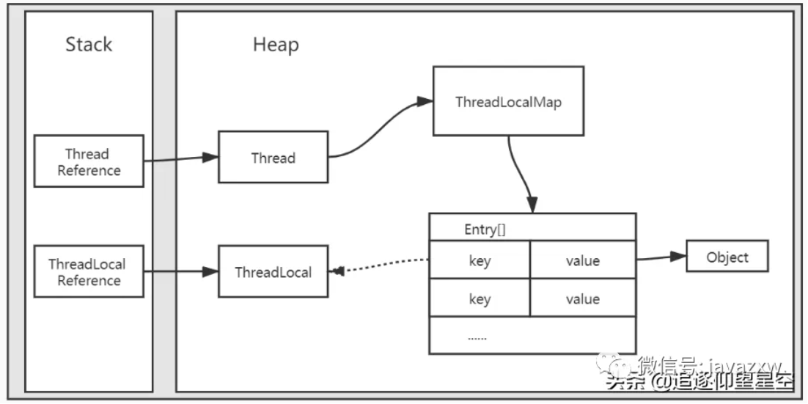
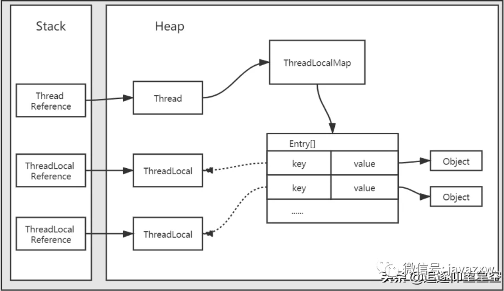
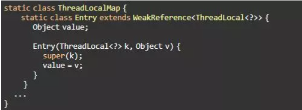
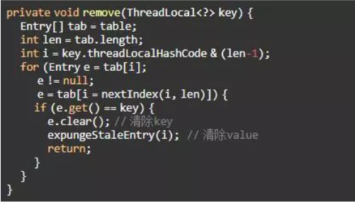
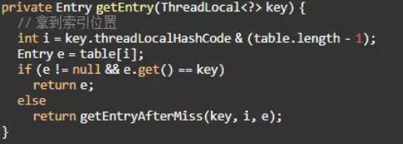
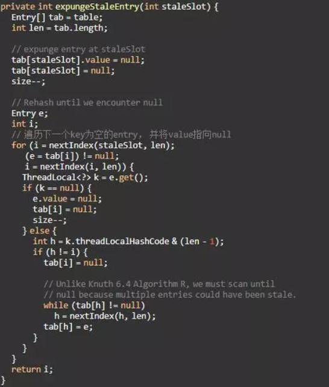
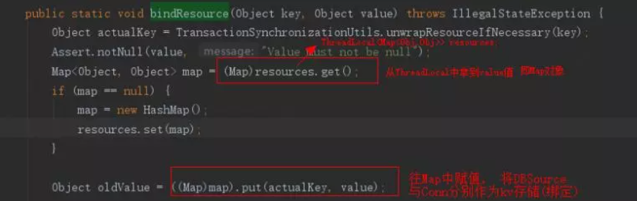
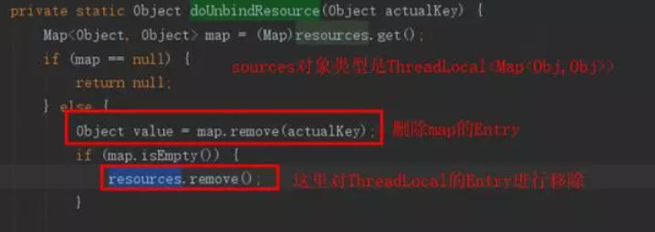

相信很多同学都听过ThreadLocal，即使没用过也听过。但是要仔细一问ThreadLocal是个啥，很多同学也不一定能说清楚。本篇博客就是为了回答关于ThreadLocal的一系列灵魂拷问：ThreadLocal是个什么？怎么用？为什么要用它？它有什么缺点？怎么避免…
ThreadLoacl是什么
在了解ThreadLocal之前，我们先了解下什么是线程封闭
把对象封闭在一个线程里，即使这个对象不是线程安全的，也不会出现并发安全问题。
实现线程封闭大致有三种方式：
Ad-hoc线程封闭：维护线程封闭性的职责完全由程序来承担，不推荐使用
栈封闭：就是用栈（stack）来保证线程安全
public void testThread() {
StringBuilder sb = new StringBuilder();
sb.append("Hello");
}
StringBuilder是线程不安全的，但是它只是个局部变量，局部变量存储在虚拟机栈，虚拟机栈是线程隔离的，所以不会有线程安全问题
- ThreadLocal线程封闭：简单易用
第三种方式就是通过ThreadLocal来实现线程封闭，线程封闭的指导思想是封闭，而不是共享。所以说ThreadLocal是用来解决变量共享的并发安全问题，多少有些不精确。
使用
JDK1.2开始提供的java.lang.ThreadLocal的使用方式非常简单
public class ThreadLocalDemo {
public static void main(String[] args) throws InterruptedException {
final ThreadLocal<String> threadLocal = new ThreadLocal<>();
threadLocal.set("main-thread : Hello");
Thread thread = new Thread(() -> {
// 获取不到主线程设置的值，所以为null
System.out.println(threadLocal.get());
threadLocal.set("sub-thread : World");
System.out.println(threadLocal.get());
});
// 启动子线程
thread.start();
// 让子线程先执行完成，再继续执行主线
thread.join();
// 获取到的是主线程设置的值，而不是子线程设置的
System.out.println(threadLocal.get());
threadLocal.remove();
System.out.println(threadLocal.get());
}
}
运行结果
null
sub-thread : World
main-thread : Hello
null
运行结果说明了ThreadLocal只能获取本线程设置的值，也就是线程封闭。基本上，ThreadLocal对外提供的方法只有三个get()、set(T)、remove()。
原理
使用方式非常简单，所以我们来看看ThreadLocal的源码。ThreadLocal内部定义了一个静态ThreadLocalMap类，ThreadLocalMap内部又定义了一个Entry类，这里只看一些主要的属性和方法
public class ThreadLocal<T> {
public T get() {
Thread t = Thread.currentThread();
ThreadLocalMap map = getMap(t);
if (map != null) {
ThreadLocalMap.Entry e = map.getEntry(this);
if (e != null) {
@SuppressWarnings("unchecked")
T result = (T)e.value;
return result;
}
}
return setInitialValue();
}
public void set(T value) {
Thread t = Thread.currentThread();
ThreadLocalMap map = getMap(t);
if (map != null)
map.set(this, value);
else
createMap(t, value);
}
public void remove() {
ThreadLocalMap m = getMap(Thread.currentThread());
if (m != null)
m.remove(this);
}
// 从这里可以看出ThreadLocalMap对象是被Thread类持有的
ThreadLocalMap getMap(Thread t) {
return t.threadLocals;
}
void createMap(Thread t, T firstValue) {
t.threadLocals = new ThreadLocalMap(this, firstValue);
}
// 内部类ThreadLocalMap
static class ThreadLocalMap {
static class Entry extends WeakReference<ThreadLocal<?>> {
Object value;
// 内部类Entity，实际存储数据的地方
// Entry的key是ThreadLocal对象，不是当前线程ID或者名称
Entry(ThreadLocal<?> k, Object v) {
super(k);
value = v;
}
}
// 注意这里维护的是Entry数组
private Entry[] table;
}
}
根据上面的源码，可以大致画出ThreadLocal在虚拟机内存中的结构

实线箭头表示强引用，虚线箭头表示弱引用。
需要注意的是：
- ThreadLocalMap虽然是在ThreadLocal类中定义的，但是实际上被Thread持有。
- Entry的key是（虚引用的）ThreadLocal对象，而不是当前线程ID或者线程名称。
- ThreadLocalMap中持有的是Entry数组，而不是Entry对象。
对于第一点，ThreadLocalMap被Thread持有是为了实现每个线程都有自己独立的ThreadLocalMap对象，以此为基础，做到线程隔离。第二点和第三点理解，我们先来想一个问题，如果同一个线程中定义了多个ThreadLocal对象，内存结构应该是怎样的？
此时再来看一下ThreadLocal.set(T)方法：
public void set(T value) {
// 获取当前线程对象
Thread t = Thread.currentThread();
// 根据线程对象获取ThreadLocalMap对象（ThreadLocalMap被Thread持有）
ThreadLocalMap map = getMap(t);
// 如果ThreadLocalMap存在，则直接插入；不存在，则新建ThreadLocalMap
if (map != null)
map.set(this, value);
else
createMap(t, value);
}
也就是说，如果程序定义了多个ThreadLocal，会共用一个ThreadLocalMap对象，所以内存结构应该是这样

这个内存结构图解释了第二点和第三点。假设Entry中key为当前线程ID或者名称的话，那么程序中定义多个ThreadLocal对象时，Entry数组中的所有Entry的key都一样（或者说只能存一个value）。ThreadLocalMap中持有的是Entry数组，而不是Entry，则是因为程序可定义多个ThreadLocal对象，自然需要一个数组。
内存泄漏
ThreadLocal会发生内存泄漏吗？
会
仔细看下ThreadLocal内存结构就会发现，Entry数组对象通过ThreadLocalMap最终被Thread持有，并且是强引用。也就是说Entry数组对象的生命周期和当前线程一样。即使ThreadLocal对象被回收了，Entry数组对象也不一定被回收，这样就有可能发生内存泄漏。
key是弱引用，碰到gc就完犊子，value是强引用，为null才被gc，有可能造成key是null但value一直存在的情况，就会出现内存泄露。解决方法，记得用完remove
ThreadLocal在设计的时候就提供了一些补救措施：
- Entry的key是弱引用的ThreadLocal对象，很容易被回收，导致key为null（但是value不为null）。所以在调用get()、set(T)、remove()等方法的时候，会自动清理key为null的Entity。
- remove()方法就是用来清理无用对象，防止内存泄漏的。所以每次用完ThreadLocal后需要手动remove()。
有些文章认为是弱引用导致了内存泄漏，其实是不对的。假设把弱引用变成强引用，这样无用的对象key和value都不为null，反而不利于GC，只能通过remove()方法手动清理，或者等待线程结束生命周期。也就是说ThreadLocalMap的生命周期由持有它的线程来决定，线程如果不进入terminated状态，ThreadLocalMap就不会被GC回收，这才是ThreadLocal内存泄露的原因。
应用场景
- 维护JDBC的java.sql.Connection对象，因为每个线程都需要保持特定的Connection对象。
- Web开发时，有些信息需要从controller传到service传到dao，甚至传到util类。看起来非常不优雅，这时便可以使用ThreadLocal来优雅的实现。
- 包括线程不安全的工具类，比如Random、SimpleDateFormat等
与synchronized的关系
有些文章拿ThreadLocal和synchronized比较，其实它们的实现思想不一样。
- synchronized是同一时间最多只有一个线程执行，所以变量只需要存一份，算是一种时间换空间的思想
- ThreadLocal是多个线程互不影响，所以每个线程存一份变量，算是一种空间换时间的思想
总结
ThreadLocal是一种隔离的思想，当一个变量需要进行线程隔离时，就可以考虑使用ThreadLocal来优雅的实现。
面试常见问题
一、内存泄漏原因探索
ThreadLocal操作不当会引发内存泄露，最主要的原因在于它的内部类ThreadLocalMap中的Entry的设计。
Entry继承了WeakReference<ThreadLocal<?>>，即Entry的key是弱引用，所以key’会在垃圾回收的时候被回收掉， 而key对应的value则不会被回收， 这样会导致一种现象：key为null，value有值。
key为空的话value是无效数据，久而久之，value累加就会导致内存泄漏。

二、怎么解决这个内存泄漏问题
每次使用完ThreadLocal都调用它的remove()方法清除数据。因为它的remove方法会主动将当前的key和value(Entry)进行清除。

e.clear()用于清除Entry的key，它调用的是WeakReference中的方法:this.referent = null
expungeStaleEntry(i)用于清除Entry对应的value， 这个后面会详细讲。
三、JDK开发者是如何避免内存泄漏的
ThreadLocal的设计者也意识到了这一点(内存泄漏)， 他们在一些方法中埋了对key=null的value擦除操作。
这里拿ThreadLocal提供的get()方法举例，它调用了ThreadLocalMap#getEntry()方法，对key进行了校验和对null key进行擦除。

如果key为null， 则会调用getEntryAfterMiss()方法，在这个方法中，如果k == null ， 则调用expungeStaleEntry(i);方法。
expungeStaleEntry(i)方法完成了对key=null 的key所对应的value进行赋空， 释放了空间避免内存泄漏。
同时它遍历下一个key为空的entry， 并将value赋值为null， 等待下次GC释放掉其空间。

同理， set()方法最终也是调用该方法(expungeStaleEntry)， 调用路径:
set(T value)->
map.set(this, value)->
rehash()->
expungeStaleEntries()
remove方法
remove()->
ThreadLocalMap.remove(this)->
expungeStaleEntry(i)
这样做， 也只能说尽可能避免内存泄漏， 但并不会完全解决内存泄漏这个问题。比如极端情况下我们只创建ThreadLocal但不调用set、get、remove方法等。所以最能解决问题的办法就是用完ThreadLocal后手动调用remove().
四、手动释放ThreadLocal遗留存储?你怎么去设计/实现？
这里主要是强化一下手动remove的思想和必要性，设计思想与连接池类似。
包装其父类remove方法为静态方法，如果是spring项目， 可以借助于bean的声明周期， 在拦截器的afterCompletion阶段进行调用。
弱引用导致内存泄漏，那为什么key不设置为强引用
这个问题就比较有深度了，是你谈薪的小小资本。
如果key设置为强引用， 当threadLocal实例释放后， threadLocal=null， 但是threadLocal会有强引用指向threadLocalMap，threadLocalMap.Entry又强引用threadLocal， 这样会导致threadLocal不能正常被GC回收。
弱引用虽然会引起内存泄漏， 但是也有set、get、remove方法操作对null key进行擦除的补救措施， 方案上略胜一筹。
线程执行结束后会不会自动清空Entry的value
一并考察了你的gc基础。
事实上，当currentThread执行结束后， threadLocalMap变得不可达从而被回收，Entry等也就都被回收了，但这个环境就要求不对Thread进行复用，但是我们项目中经常会复用线程来提高性能， 所以currentThread一般不会处于终止状态。
五、Thread和ThreadLocal有什么联系呢
ThreadLocal的概念。
Thread和ThreadLocal是绑定的， ThreadLocal依赖于Thread去执行， Thread将需要隔离的数据存放到ThreadLocal(准确的讲是ThreadLocalMap)中, 来实现多线程处理。
相关问题扩展
加分项来了。
六、Spring如何处理Bean多线程下的并发问题
ThreadLocal天生为解决相同变量的访问冲突问题， 所以这个对于spring的默认单例bean的多线程访问是一个完美的解决方案。spring也确实是用了ThreadLocal来处理多线程下相同变量并发的线程安全问题。
spring 如何保证数据库事务在同一个连接下执行的
要想实现jdbc事务， 就必须是在同一个连接对象中操作， 多个连接下事务就会不可控， 需要借助分布式事务完成。那spring 如何保证数据库事务在同一个连接下执行的呢？
DataSourceTransactionManager 是spring的数据源事务管理器， 它会在你调用getConnection()的时候从数据库连接池中获取一个connection， 然后将其与ThreadLocal绑定， 事务完成后解除绑定。这样就保证了事务在同一连接下完成。
概要源码：
1.事务开始阶段：
org.springframework.jdbc.datasource.DataSourceTransactionManager#doBegin->TransactionSynchronizationManager#bindResource->org.springframework.transaction.support.TransactionSynchronizationManager#bindResource

2.事务结束阶段:
org.springframework.jdbc.datasource.DataSourceTransactionManager#doCleanupAfterCompletion->TransactionSynchronizationManager#unbindResource->org.springframework.transaction.support.TransactionSynchronizationManager#unbindResource->TransactionSynchronizationManager#doUnbindResource
